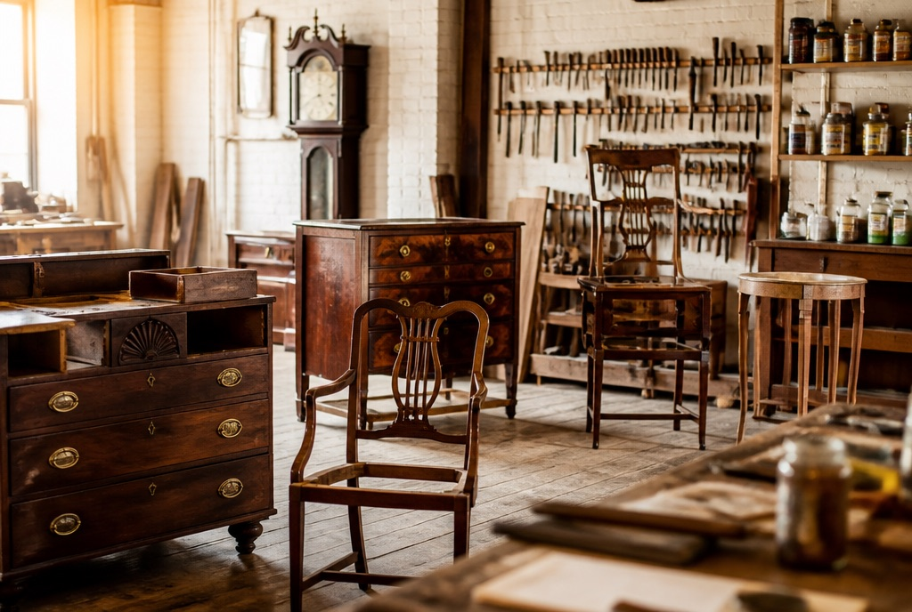
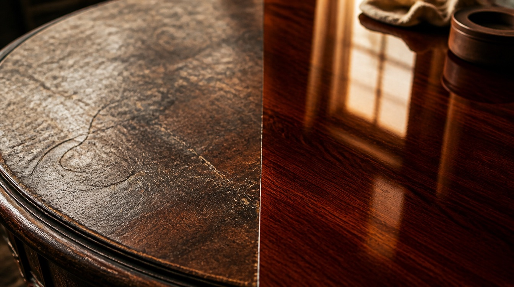
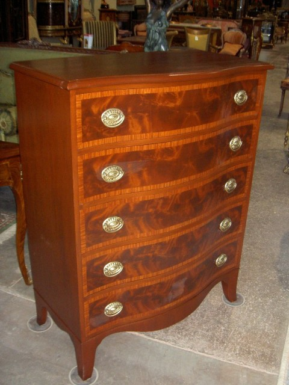
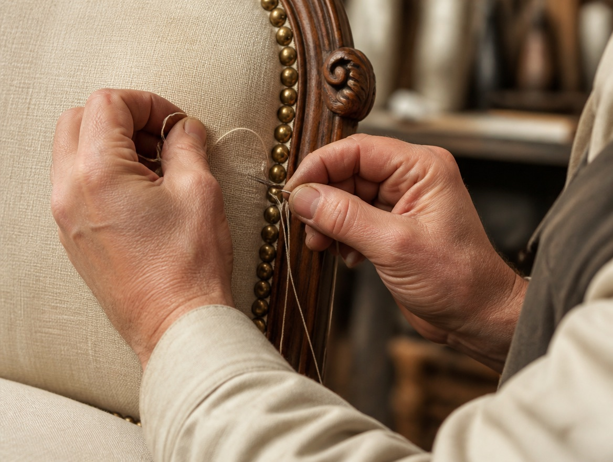
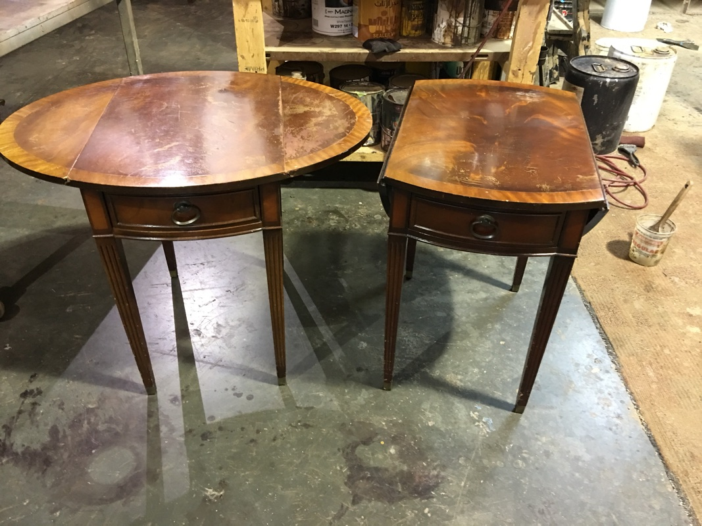
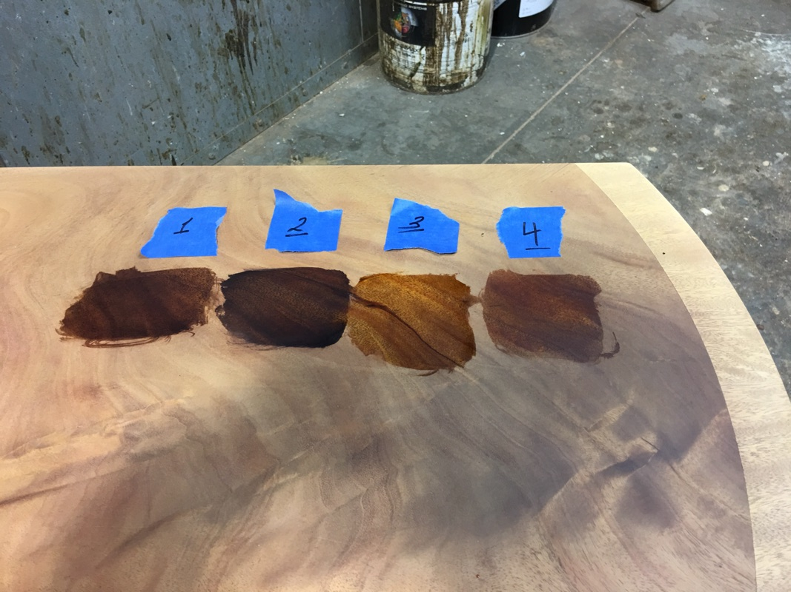
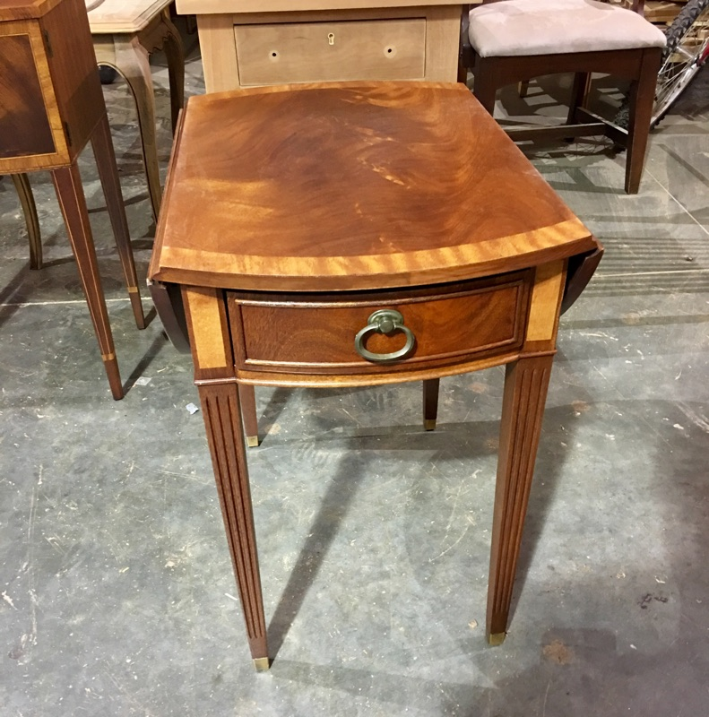

Sterling, Virginia · By hand since 1991
Wood remembers.
Museum-quality restoration of fine furniture and antiques for the Washington area — every step, from stripping to French polish, done by hand.
Family owned since 1991
A piece of furniture is a family record.
Founded in New York City in 1991 and at home in Sterling, Virginia since 1996, Antiques & Furniture Restoration Inc is a full-service restoration studio. In our 3,000-square-foot workshop, heirlooms are stripped, repaired, colored and finished entirely by hand — with environmentally safe products and the patience each piece deserves.
Our work is guided by one principle: preserve the look, warmth and artistic value of your fine furniture while protecting the integrity — and the worth — of the antique underneath.
Our story →
What we do
Four crafts, one bench.
French polishing, color matching, piece replacement, re-gluing, upholstery and repair — for households, designers, estates and insurance claims.

Furniture Refinishing
Hand stripping, stain matching and finishes from hand-rubbed oil to lacquer and French polish.
Explore
Antique Restoration
Repair, re-gluing and veneer work that preserves the original tone — and the value — of the piece.
Explore
Fine Upholstery
High-end upholstery for antique and modern seating, finished with traditional detail.
ExploreDoor Restoration
Exterior door stripping and refinishing that brings the front of the house back to life.
ExploreThe process
Every step, by hand.
No shortcuts and no assembly line. From the first assessment to the final coat, each piece moves through the workshop under the same pairs of hands.
We work with environmentally safe and oil-based products, chosen for durability and for finishes that keep the original colors and tonalities of the wood.
Start with a free estimate →-
Assessment & estimate
Send photos and a description — we reply quickly with an honest quote. Pick-up and delivery available.
-
Hand stripping
The old finish comes off by hand — never harsh tank dipping — so fragile veneer and inlay survive.
-
Repair & re-gluing
Loose joints, missing veneer, broken moldings and hardware are rebuilt with period-appropriate techniques.
-
Color & stain matching
You choose the stain on your actual piece, in the shop, with as many samples as it takes.
-
Finishing
Sealed, sanded and top-coated — hand-rubbed oil, non-yellowing lacquer or traditional French polish.
-
Delivery
The piece comes home. Most clients tell us it looks better than they ever imagined it could.
Never acids. Never tanks. Never shortcuts. Every step, by hand.
The workshop is in Sterling, in Loudoun County — with free pick-up and delivery across Northern Virginia (Fairfax, Arlington, Alexandria, McLean, Great Falls, Reston, Leesburg), Washington DC from Georgetown to Capitol Hill, and Maryland from Bethesda and Potomac through Montgomery County. Heirlooms have reached us from across the country.
Featured project
The Federal Style Collection



Family heirlooms, passed down for a new Washington apartment — finish worn through, veneer thin, fragile and missing in places.
After hand stripping, cleaning and sanding, the grain finally showed its depth. The client chose a mahogany stain from samples applied to the piece itself, and three coats of non-yellowing lacquer gave the collection the protection it needed for the next generation.
Hand stripped · Veneer replaced · French polished
More project stories →I had no idea how much of a difference an excellent professional restoration can make. The dresser I thought was a piece of junk — in Haridi’s hands it was brought back to life.
Susan B. · Washington, DC
A true artisan! The refinishing required removing green oil-based paint and reconstructing keyholes and moldings. The result was breathtaking.
Rick & Annette W. · Warrenton, VA
The finished product couldn’t have come out nicer, and the stain color he chose was perfect. Free of charge, he came to my home to pick up and deliver the pieces.
Donna M. · Cheverly, MD
An absolute pleasure from start to finish. We chose the stain on the sanded piece — as many samples as we needed. He takes real pride in his work.
Joanne M. · McLean, VA
Trusted by
Bring us the piece everyone else gave up on.
Send a few photos and a short description — we’ll come back quickly with an honest estimate.